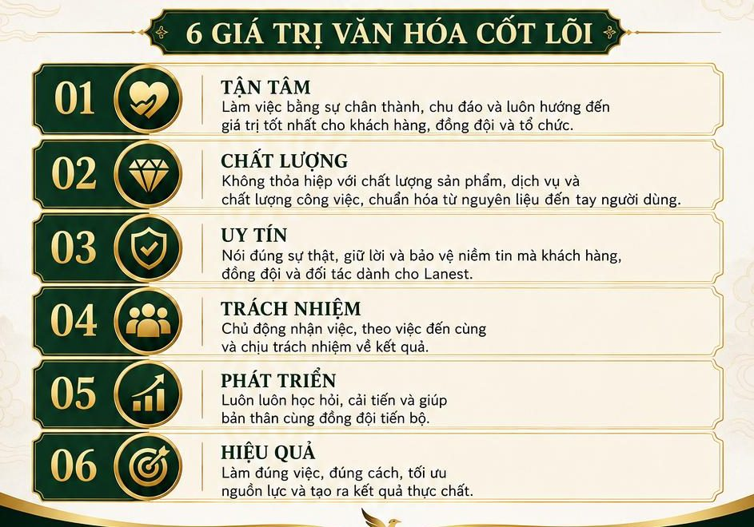

Khách mua yến thường hỏi về tổ yến, về giấy tờ, ít ai hỏi về những người làm ra hũ yến đó. Nhưng chất lượng của một lô hàng phụ thuộc rất nhiều vào thói quen của người làm. Bài này kể về văn hóa làm việc Yến Sào Lanest: sáu giá trị cốt lõi được viết thành sổ tay, và những việc nhỏ đội ngũ giữ mỗi ngày để khách, đại lý yên tâm.
Đội thợ Lanest trong đồng phục, đội mũ trùm tóc, đeo khẩu trang và găng tay khi làm sạch tổ yến
1. Giá trị không đi chép về
Nhiều công ty treo khẩu hiệu cho đẹp. Ở Lanest, sáu giá trị cốt lõi bắt đầu từ những bài học người sáng lập nhận từ ba mẹ và người thầy, rồi mới thành chữ trong sổ tay. Người sáng lập Lanest kể:
"nó cũng ảnh hưởng tới mình trong công ty là mình cũng luôn hướng tới nhân viên là phải tận tâm nè phải chu đáo với khách hàng phải sống có trách nhiệm làm việc thì phải có hiệu quả..."
Tháng 8/2026, những điều đó được viết thành Sổ tay Văn hóa và Ứng xử, ban hành cho toàn công ty.
2. Sáu giá trị và lời hứa đi kèm
Mỗi giá trị có một câu "tuyên bố" để người làm tự nói với mình, và một việc cụ thể để làm theo:
| Giá trị | Lời tuyên bố | Việc cụ thể |
| Tận Tâm | "Tôi phục vụ khách hàng vượt sự mong đợi." | Theo nhu cầu của khách, đại lý tới khi giải quyết xong, không đùn đẩy. |
| Chất Lượng | "Tôi đặt chất lượng làm tiêu chuẩn trong mọi việc mình làm." | Không bàn giao sản phẩm không đạt; thấy lỗi phải báo ngay. |
| Uy Tín | "Tôi giữ uy tín như giữ mạng." | Nói đúng nguồn gốc, thành phần; chính sách rõ ràng, nhất quán. |
| Trách Nhiệm | "Tôi luôn chịu trách nhiệm 100%." | Gặp khó thì báo sớm; sai thì nhận và sửa, không đổ lỗi. |
| Phát Triển | "Tôi luôn học hỏi và phát triển để phục vụ khách hàng tốt hơn." | Nhận góp ý cầu thị, rút bài học sau sai sót, chỉ lại cho người mới. |
| Hiệu Quả | "Tôi luôn tìm giải pháp để đạt hiệu quả cao." | Làm theo mục tiêu, báo cáo bằng số liệu thật. |

Sáu giá trị văn hóa cốt lõi của Công ty TNHH Yến Sào Lanest
3. Uy tín bắt đầu từ cách nói về sản phẩm
Nếu anh chị để ý, các bài viết của Lanest luôn dùng chữ "hỗ trợ" mà không dùng "công dụng". Đó không phải thói quen văn phong, mà là một quy định trong sổ tay: khi nói về yến, nhân viên dùng từ "hỗ trợ" thay vì "công dụng". Yến là thực phẩm. Sản phẩm này không phải là thuốc và không có tác dụng thay thế thuốc chữa bệnh.
Cùng tinh thần đó, sổ tay yêu cầu thông tin về nguồn gốc, thành phần phải trung thực, còn giá và chính sách cho đại lý phải rõ ràng, nhất quán, không tự ý đổi mà không báo. Với người sáng lập Lanest, có ba điều không đánh đổi dù lời lãi thế nào:
"Đó là mình phải giữ ý tín nè, có trách nhiệm và làm những cái việc có đạo đức."
4. Chất lượng: thấy lỗi thì báo, không cho qua
Câu "không bàn giao sản phẩm không đạt" nghe đơn giản, nhưng nó cần một môi trường mà người báo lỗi không sợ bị trách oan. Một ví dụ: ở khâu soạn và đóng đơn, Lanest quy định ghi tên người soạn và người đóng trên từng đơn. Người sáng lập Lanest giải thích với cả đội rằng quy định này là để bảo vệ người làm đúng:
"cái này nó là cái quyền lợi của mọi người... ghi cái tên người soạn ra luôn để truy ra."
Trước đó, khi không biết ai làm sai thì "cuối tháng là quy lỗi cả nhóm". Bây giờ sai ở đâu sửa ở đó, người không sai không phải chịu chung. Ở khâu làm yến tinh chế, tinh thần này đi cùng đội thợ riêng và 4 chốt kiểm, kể ở bài bên trong xưởng yến Lanest.
5. Học được gì thì chỉ lại cho nhau
Giá trị Phát Triển ở Lanest không dừng ở chuyện mỗi người tự đi học. Người sáng lập Lanest đi học về là mang ngay những gì học được về chia sẻ với đội:
"cái hay mà mình học được thì mình chia sẻ cho đồng đội thôi."
Với người bán hàng, Lanest chọn cách cho nhân viên thấy tận mắt cách làm hàng, để khi tư vấn họ nói bằng hiểu biết của mình chứ không đọc thuộc lòng: "Chị show hết quy trình cho các bạn biết để tự tin bán hàng." Còn khi cần ra một quy định mới, người sáng lập hỏi ý cả đội trước:
"mọi người thấy như vậy có được không?... Nếu được thì giơ tay để quyết, để mình thông qua."
6. Bữa cơm trưa và sáu câu tự hỏi cuối ngày
Văn hóa còn nằm ở những chuyện không ghi trong hợp đồng. Ở Lanest, buổi trưa cả đội ăn cơm chung:
"bên chị có hỗ trợ ăn trưa cùng với nhau á. Tại vì chị thấy buổi trưa mấy bạn đi về hơi nắng với lại sáng mấy bạn mua đồ ăn lên theo không đảm bảo á. Sẵn có chị đi chợ á là nấu cơm rồi mọi người ăn cùng với nhau luôn."
Khi chọn người, điều được xem trước tiên cũng không phải bằng cấp: "Quan trọng nhất vẫn là tinh thần và thái độ làm việc của các bạn."
Sổ tay khép lại bằng sáu câu mỗi người tự hỏi trước khi về:
- Tôi đã thực sự nghĩ cho khách hàng chưa?
- Việc này đạt tiêu chuẩn chưa?
- Tôi đã giữ đúng cam kết chưa?
- Tôi đã theo việc đến kết quả cuối cùng chưa?
- Hôm nay tôi tốt hơn hôm qua ở điểm nào?
- Kết quả tạo ra có xứng đáng nguồn lực bỏ ra không?
Sáu câu hỏi không bảo đảm ngày nào cũng hoàn hảo. Nhưng nó giúp mỗi người tự nhìn lại việc mình làm, trước khi khách hay đại lý phải nhắc. Câu chuyện Lanest đi từ những đơn yến đầu tiên tới hôm nay có ở bài câu chuyện thương hiệu Lanest; góp ý thật của khách và cách Lanest ghi nhận ở bài khách hàng góp ý.
Câu hỏi thường gặp
Sáu giá trị cốt lõi của Lanest là gì?
Tận Tâm, Chất Lượng, Uy Tín, Trách Nhiệm, Phát Triển, Hiệu Quả. Sáu giá trị được viết trong Sổ tay Văn hóa và Ứng xử ban hành tháng 8/2026.
Vì sao Lanest nói yến "hỗ trợ" mà không nói "công dụng"?
Vì yến là thực phẩm, không phải thuốc. Sổ tay văn hóa của Lanest quy định nhân viên dùng từ "hỗ trợ" khi nói về yến, để khách không hiểu nhầm.
Văn hóa này liên quan gì tới người mua yến?
Những quy định như không bàn giao sản phẩm không đạt, thấy lỗi báo ngay, ghi tên người soạn và người đóng đơn giúp sai sót được phát hiện sớm hơn và sửa đúng chỗ. Có góp ý, anh chị gọi 0258 6278 627.